【台南】安平景點一日遊：2026安平老街美食必買＆安平附近景點地圖攻略
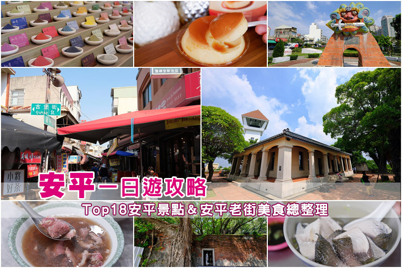
台南安平一日遊怎麼規劃？看這篇超詳細安平景點介紹就對了！必吃的安平老街美食，文章牛肉湯、王氏魚皮、同記安平豆花；安平老街必買伴手禮，林永泰興蜜餞、安平小舖、得意蝦餅等，通通彙整在安平老街地圖中囉～
安平老街附近景點超級精彩，安平古堡、安平樹屋、大魚的祝福…都是台南必去景點，光安平就能玩上1-2天呢。還有停車場、交通、住宿等資訊，波比也幫大家整理好啦，一起來有300多年歷史的台灣第一街探險吧！
安平老街地圖＆安平景點一日遊規劃
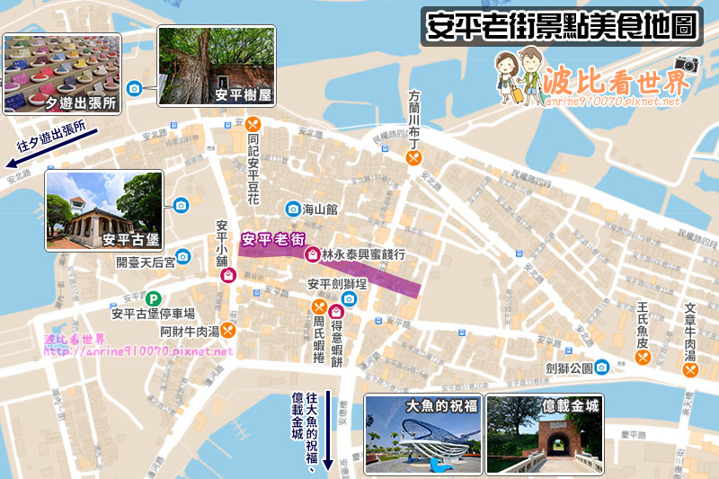
最夯的安平景點＆安平老街美食，波比都繪製在上方安平老街地圖裡了，安平一日遊規劃起來是不是很輕鬆呢！
安平老街歷史介紹
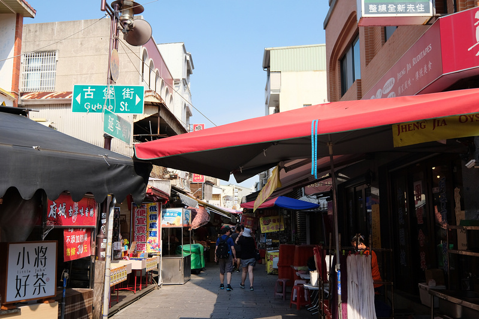
台南安平老街 (延平街、中興街、效忠街) 被稱作「台灣第一街」，是300多年前荷蘭人在台灣興建的第一條街道。最熱鬧的延平街曾於1995年拓寬，因此歷史感相對薄弱；反而是中興街、效忠街保存較為完整，更適合訪古尋幽。
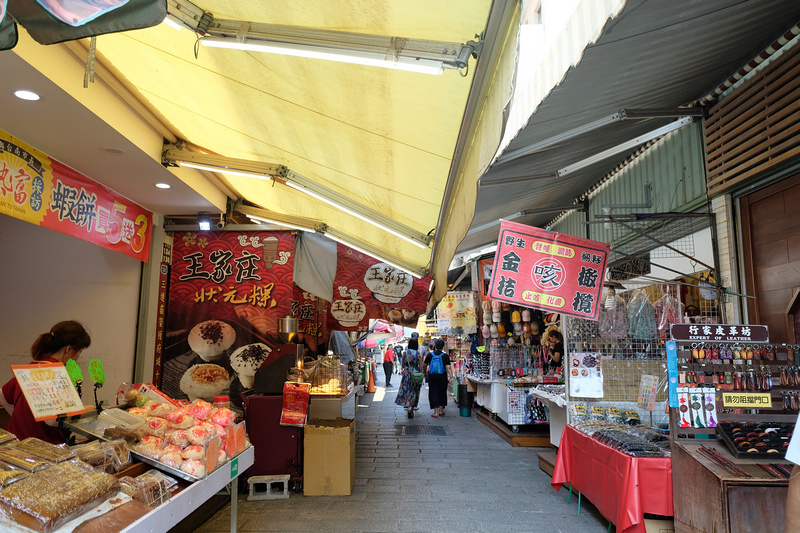
老街上店家以伴手禮為主、餐廳不多，因此下面介紹的美食並非全部都在安平老街上；而是涵蓋所有熱門的安平老街附近美食必買，但都是從老街出發走路能到的距離，看到喜歡的餐廳就放心出發吧～
安平老街美食推薦
1. 文章牛肉湯
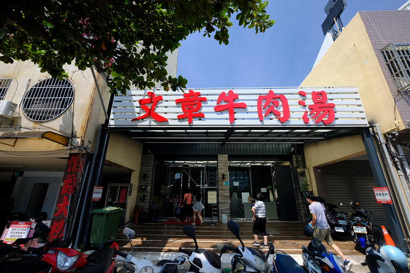
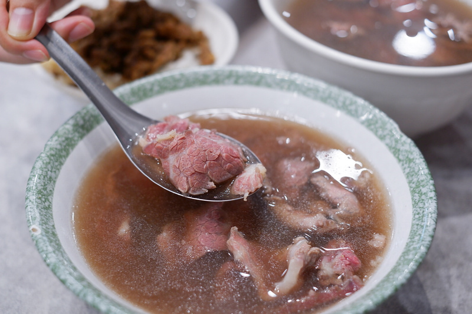
人氣超旺牛肉湯老店，為因應排隊人潮，在老店不遠處開了一家新店面，用餐環境寬敞乾淨很讚喔。
招招牌牛肉湯 ($190) 肉有點柴；但限量特選牛肉湯 ($290) 就厲害了，不僅牛肉厚又嫩、鮮甜度也更上一層，好喝！
地址：台南市安平區安平路300號
營業時間：10:30-02:00 (周四公休)
2. 王氏魚皮

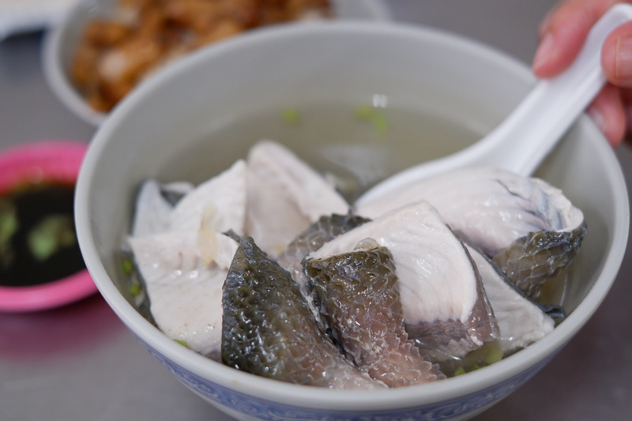
同樣是安平排隊老店，經常中午過後就賣完了，不想錯過不妨當早餐吃～餐點都不貴，招牌魚皮湯一碗70元。
魚皮超多又大塊，上頭還有不少魚肉，沾哇沙米醬油超涮嘴；魚湯添加不少薑絲，喝起來鮮甜美味，真的很讚呢！
地址：台南市安平區安平路612號
營業時間：04:00–14:00 (周一至周五)；04:00-15:00 (周六日)
3. 阿財牛肉湯
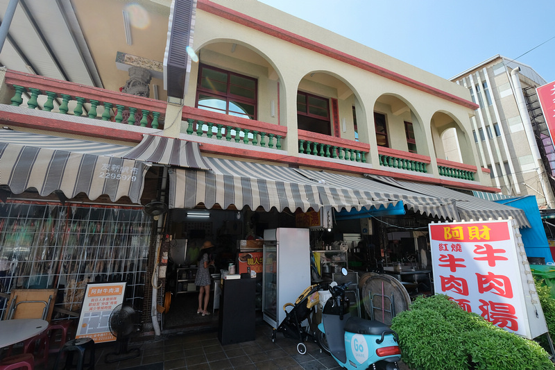
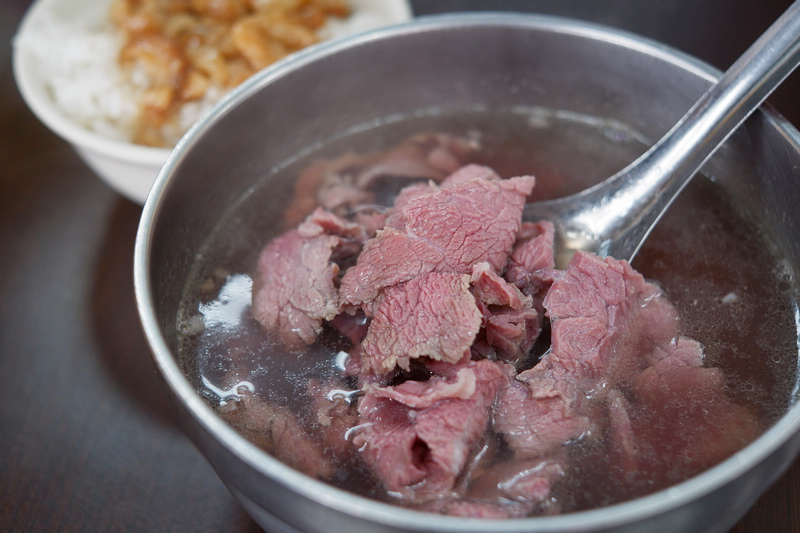
牛肉湯名店再一發，愛吃牛肉的朋友來台南真的是太幸福了。大碗牛肉湯160元，還附贈一碗肉燥飯能吃很飽。
牛肉份量十足、呈現粉紅色好誘人，吃起來也很嫩口；湯頭超鮮甜，波比覺得更勝文章牛肉湯，一下就喝光啦～
地址：台南市安平區古堡街5號
營業時間：12:00–21:00 (周三公休)
4. 周氏蝦捲
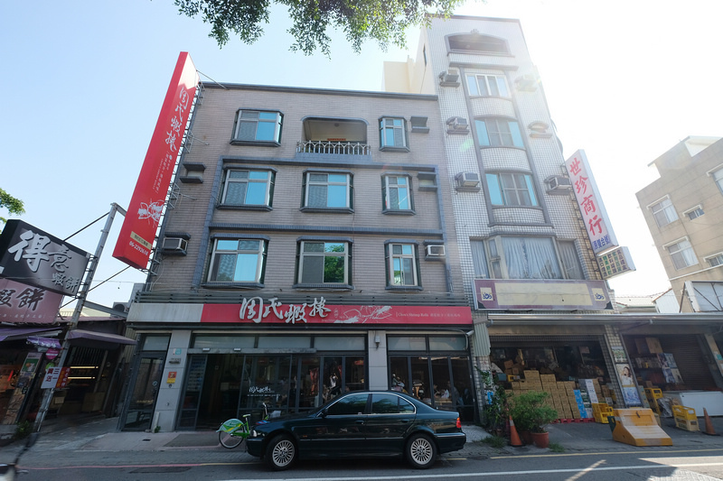
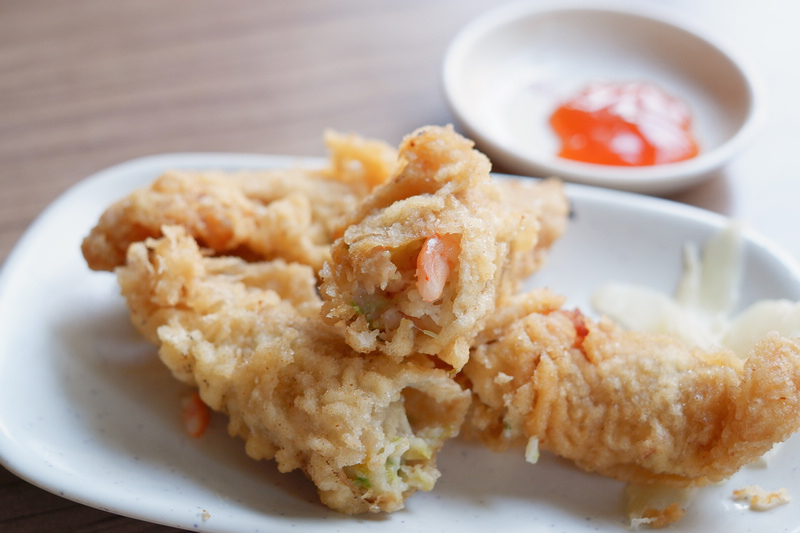
超過30年歷史的蝦捲老店，主打以新鮮蝦仁製成。雖是老店，但環境明亮舒適，就是服務態度較冷淡一點…
蝦捲兩條75元，好貴啊！外皮炸得很酥脆，裡面吃得到真實的蝦肉塊，芹菜味明顯，蘸上甜辣醬還挺涮嘴的囉。
地址：台南市安平區安平路405-1號
營業時間：10:00–21:30
5. 同記安平豆花
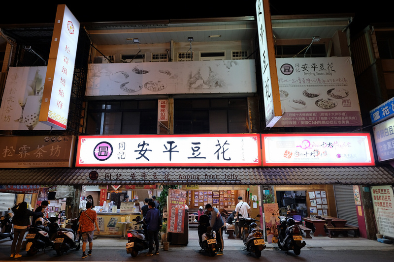
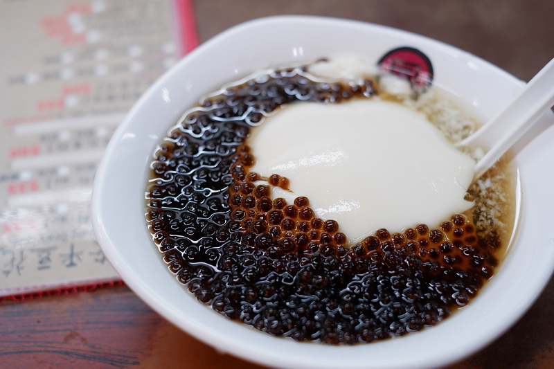
從挑擔叫賣開始，同記豆花已經在安平飄香50年，曾被多家國內外媒體報導，連CNN也推薦的府城必吃美食。
豆花綿密細嫩豆味十足，珍珠份量給的非常多；古早味糖水，帶有一種微微的焦香，雖然很甜但是很好喝喔！
地址：台南市安平區安北路433號
營業時間：09:00–23:00 (周一至周日)